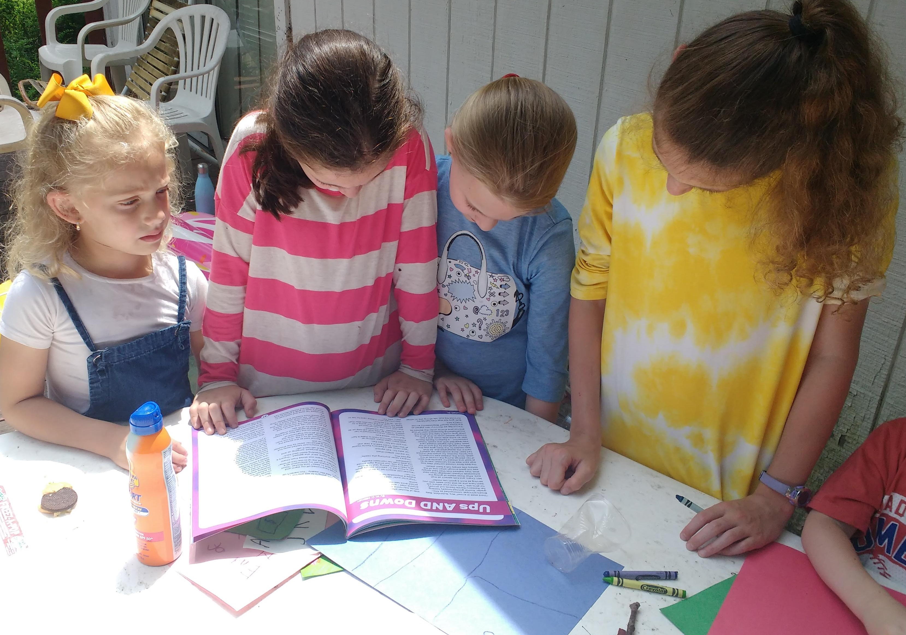
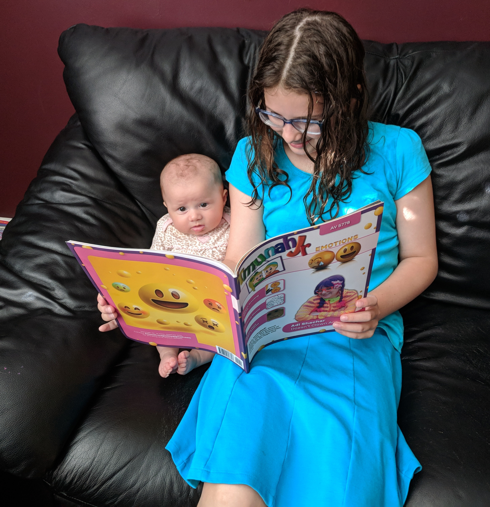
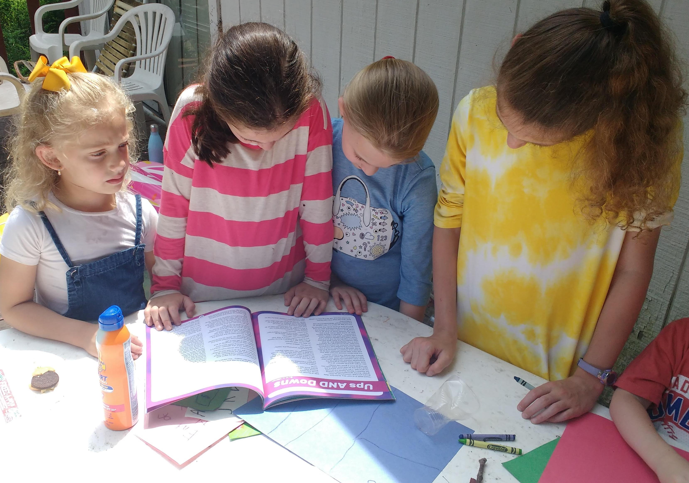
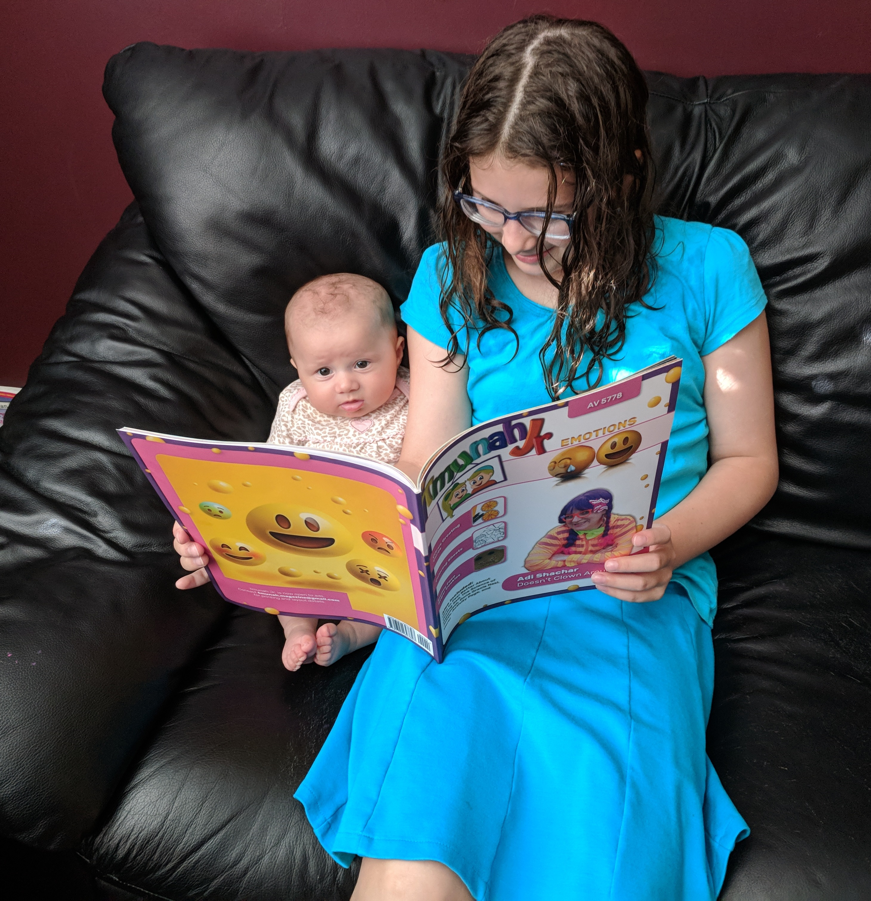

About Tmunah Jr
Our founders unsubscribed from the mainstream frum magazines when their children started asking why girls older than five couldn't have their pictures printed. When they realized that there were no magazines for their children to read that reflected Torah values, they immediately resolved to create their own. Less than three weeks later, they released the first issue of Tmunah Jr.
Tmunah Jr. continues to grow, with new issues released every Rosh Chodesh. In Sivan, we released our first print edition through Amazon. Tmunah Jr. will always be free for digital download. We will always be a community-driven magazine guided by Torah values rather than a profit motive. Tmunah Jr. is produced entirely by volunteers who want to give our children Torahdig, entertaining, educational content that conveys respect for all people.